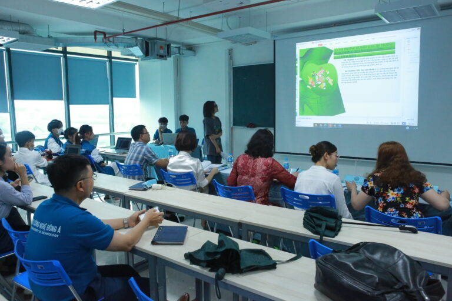
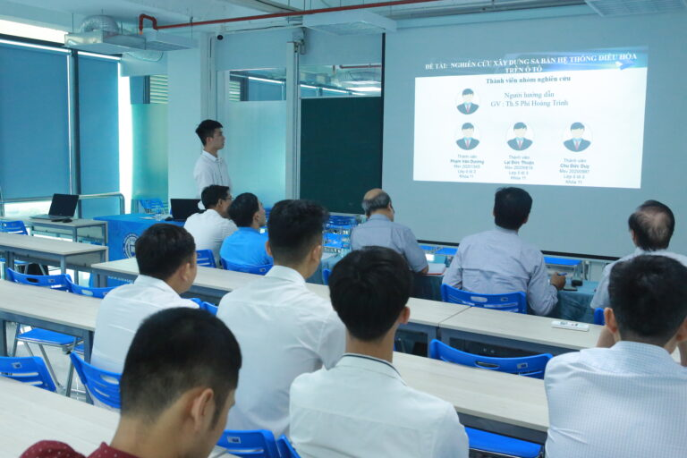

Hội nghị sinh viên nghiên cứu khoa học Trường Đại học Công Nghệ Đông Á năm học 2021–2022
Chiều ngày 23/05/2022, tại tầng 6 Toà Đinh Trọng Dật đã diễn ra “Hội nghị Sinh viên nghiên cứu khoa
học Trường Đại học Công Nghệ Đông Á năm học 2021–2022”. Đây là một hoạt động thường niên nhằm
tiếp nối, lan tỏa ngọn lửa đam mê nghiên cứu khoa học của sinh viên trong trường.
Tại hội nghị, nhiều đề tài mới và có tính thực tiễn được hội đồng đánh giá cao của các bạn sinh viên
đã được đưa ra như:
- Đề tài “Phát triển thị trường tiêu thụ sản phẩm trầm hương sinh học của Công ty cổ phần trầm hương sinh học
TTT” do nhóm SV: Trần Đức Hải/ Lê Thị Lan Anh/ Đinh Minh Hiếu. Giảng viên hướng dẫn: ThS. Lưu Công Thường
- Đề tài “Phát triển nguồn nhân lực chất lượng cao và vấn đề đặt ra trong công tác đào tạo tại trường Đại học
Công nghệ Đông Á” do nhóm SV: Vũ Thị Thu/ Đinh Văn Lý/ Nguyễn Thị Thu Uyên. Giảng viên hướng dẫn: ThS. Lâm
Phương Hảo
- Đề tài “Nghiên cứu về tài nguyên du lịch văn hóa trên địa bàn Hà Nội để phục vụ cho việc lựa chọn điểm thực
hành chuyên môn cho sinh viên khoa Du lịch- Trường Đại học Công nghệ Đông Á” do nhóm SV: Trần Thị Giang/
Nguyễn Văn Thái/ Nguyễn Thị Huyền. Giảng viên hướng dẫn: ThS. Lâm Phương Hảo

- Đề tài “Nghiên cứu, xây dựng sa bàn hệ thống điều hòa trên xe ô tô” do nhóm SV: Phạm Văn Dương/ Lại Đức
Thuận/ Chu Đức Duy. Giảng viên hướng dẫn: ThS. Phí Hoàng Trình
- Đề tài “Nghiên cứu, thiết kế, chế tạo khung vỏ xe sinh thái tiết kiệm nhiên liệu” do nhóm SV: Nguyễn Mạnh
Hùng/ Phạm Ngọc Cường/ Ngô Quang Hiểu. Giảng viên hướng dẫn: ThS. Lê Trạch Trưởng
- Đề tài “Phát video 360 độ trực tuyến trên luồng HTTP/2” do nhóm SV: Phạm Anh Tuấn/ Trần Thị Hải Yến. Giảng
viên hướng dẫn: ThS. Nguyễn Viết Hùng
- Đề tài “Nghiên cứu và thiết kế mô hình bộ lưu điện thông minh” do nhóm SV: Phạm Xuân Dũng. Giảng viên hướng
dẫn: ThS. Nguyễn Thanh Phong
- Đề tài “Thiết kế chế tạo máy sấy thăng hoa” do nhóm SV: Nguyễn Công Viên/ Nguyễn Mậu Việt/ Hà Văn Hải. Giảng
viên hướng dẫn: Th.S Phạm Thế Văn

- Đề tài “Nghiên cứu sản xuất bánh mì không gluten ứng dụng trong thực tiễn” do nhóm SV: Lê Thị Mai Phương/
Đồng Văn Tiến/ Quàng Văn Đạt. Giảng viên hướng dẫn: ThS. Nguyễn Minh Hằng/ CN. Nguyễn Thị Thu Hiền
- Đề tài “Nghiên cứu, thiết kế, chế tạo mô hình tàu ngầm chạy bằng điện“do nhóm SV: Bùi Thế Vĩnh/ Phạm Quốc
Tuấn/ Đỗ Tiến Khải. Giảng viên hướng dẫn: PGS.TS Trần Đức Thuận/ Th.S Phí Hoàng Trình
- Đề tài “Nghiên cứu xe robot tự hành phun khử khuẩn y tế có điều khiển từ xa” do SV: Lê Tiểu Niên. Giảng viên
hướng dẫn: ThS. Nguyễn Hữu Nguyện
- Đề tài “Phương pháp ước tính chế độ xem trực tuyến video 360 sử dụng Deep Learning” do nhóm SV: Đào Thu
Ngân/ Trương Thị Dịu. Giảng viên hướng dẫn: ThS. Nguyễn Viết Hùng
- Đề tài “Nghiên cứu phương pháp tính toán và cấu tạo thép sàn ô cờ, áp dụng cho nhà nhiều tầng” do SV: Lê
Quang Linh. Giảng viên hướng dẫn: PGS.TS Phạm Đức Phung
Hội nghị là nơi các bạn sinh viên thể hiện bản lĩnh, tư duy làm việc độc lập và lan toả truyền
thống nghiên cứu khoa học tốt đẹp của sinh viên EAUT.